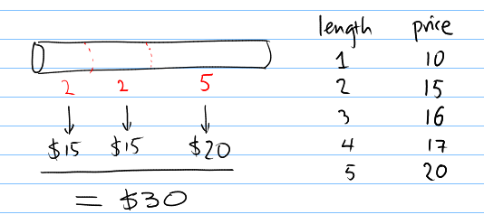
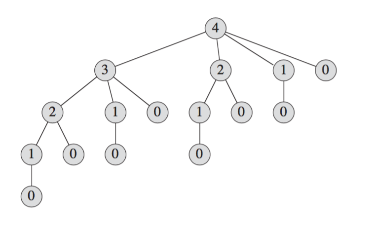

Divide and conquer revisited
Recursive formulation of the solution
Bottom-up computation of recursive formulation

Can you do better than this cutting?
We are only allowed the cut the rod into integer-length intervals.
The selling prices are not uniform, and given in a table.
What is the best strategy to maximize the total revenue.
Consider the following pricing:
| $i$ | 1 | 2 | 3 | 4 | 5 | 6 | 7 | 8 | 9 | 10 |
|---|---|---|---|---|---|---|---|---|---|---|
| $p_i$ | 1 | 5 | 8 | 9 | 10 | 17 | 17 | 20 | 24 | 30 |
Suppose we have a rod of length 4.
More generally, we write:
$r(n) = p_{i_1} + p_{i_2} + \dots + p_{i_k}$.! How do we compute $\mathrm{cut}(n)$ and $r(n)$?
Consider an arbitrary length $n$.
Can we decompose this to smaller solutions?
! What if we know the optimal cutting for all lengths $< n$?
We can guess the length of the last segment in the optimal cut(n). Here are the cases:
Now, pick the best guess.
$$ r(n) = \max\{p_n, r(n-1) + p_1, r(n-2) + p_2, \dots\}$$
A recursive formulation
def cut_rod(p, n):
"returns the maximal revenue for length `n`"
if n == 0:
return 0
q = -infinity
for i in range(1, n+1):
q = max(q, p[i] + cut_rod(p, n-i))
return q
! $$ T(n) = 1 + \sum_{j=0}^{n-1}T(n-1) $$
$$T(n) = \Theta(2^n)$$ – ouch.
Let’s look at the number of invocations of cut_rod(p, 4):

! There are a number of redundancies.
Let’s compute $r(n)$ bottom-up from $r(0), r(1), \dots$.
def cut_rod(p, n):
r = [0 for i in range(n+1)]
for j in range(1, n+1):
q = -infinity
for i in range(1, j+1):
q = max(q, p[i] + r[j-i])
r[j] = q
return r[n]
! We can see that this algorithm (with the two nested loops) is in $\Theta(n^2)$.
So, far we have only computed the optimal revenue, but what abou the actual segments?
It’s easy to record the segment lengths:
def cut_rod(p, n):
r = [0 for i in range(n+1)]
s = [0 for i in range(n+1)]
for j in range(1, n+1):
q = -infinity
for i in range(1, j+1):
if q < p[i] + r[j-i]:
# the last segment is i.
q = p[i] + r[j-1]
s[j] = i
r[j] = q
return s, r[n]
! Still runs in $\Theta(n^2)$.
Exercise:
Work out $r(10)$ and the optimal cutting $\mathrm{cut}(10)$ using the bottom-up
cut-rod algorithm.
| $i$ | 1 | 2 | 3 | 4 | 5 | 6 | 7 | 8 | 9 | 10 |
|---|---|---|---|---|---|---|---|---|---|---|
| $p_i$ | 1 | 5 | 8 | 9 | 10 | 17 | 17 | 20 | 24 | 30 |
Definition:
Given a string $A = \left<a_1, a_2, \dots a_n\right>$ where $a_i$ are characters.
There are three types of string edit operations:
INSERT(A, i, c) = $\left<a_1, a_2, \dots, a_i, c, a_{i+1}, \dots,
a_n\right>$
DEL(A, i) = $\left<a_1, a_2, \dots, a_{i-1}, a_{i+1}, \dots, a_n\right>$
REPLACE(A, i, c) = $\left<a_1, a_2, \dots, a_{i-1}, c, a_{i+1}, \dots, a_n\right>$
Problem:
Given two strings $A$ and $B$, what is the minimal number of edit operations required to transform $A$ to $B$?
Solution to be discussed in class.